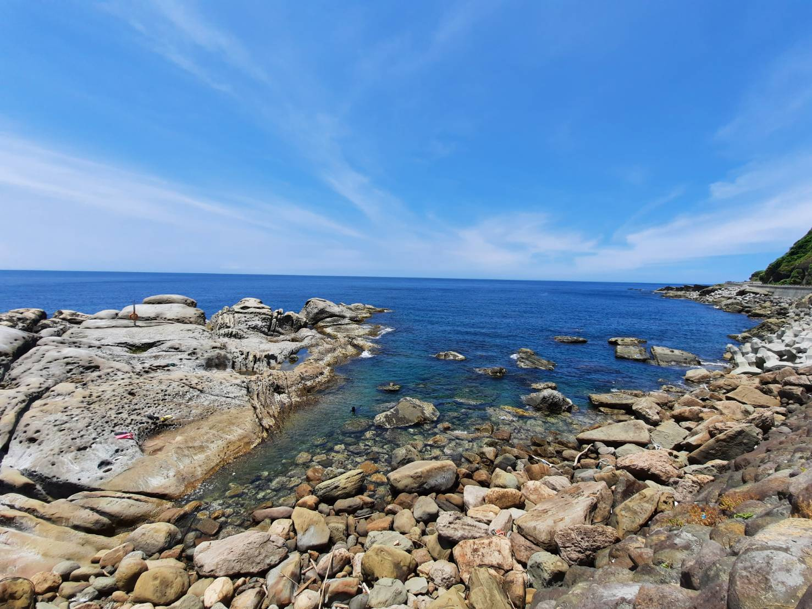
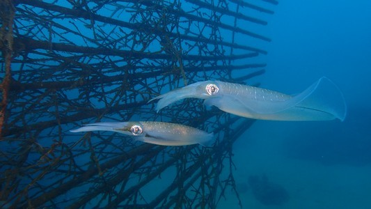
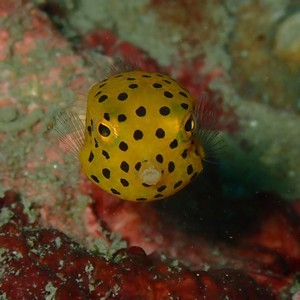

東北角岸潛

微距生物天堂
|
東北角是北台灣最方便前往的潛點，小生物特多，有上百種海蛞蝓，蝦、蟹等小生物，以及特別為復育
軟絲而做成的軟絲產房。為復育軟絲，教練在海上放置竹叢，讓軟絲產卵更順利。
一串串白色的軟絲卵掛在竹叢上，同時也吸引魚群靠近，形成小型生態系。成為夏季特殊潛點。
|
 |
天氣
每年4至10月是東北角適合潛水的季節，但水溫通常在端午節過後才會比較暖和。需要特別注意的是，
東北角海水能見度比綠島、蘭嶼較差，大多以岸潛為主，加上地形特殊，岸潛步行需要體力。
精選潛點介紹

01 龍洞4號(和美國小)
最大深度約24m，在龍洞灣內，沿龍洞街到底，下水處在九孔池面海方向右側前端，下潛後往北走，順坡度可至24米處，
再慢慢沿沙地與礁石而返。此處地形單純，不但適合初級潛水員玩樂，亦可進行大深度訓練。
潛點等級：初級
最大深度：25m
02 82.5k
最大深度約24m，在龍洞灣內，沿龍洞街到底，下水處在九孔池面海方向右側前端，下潛後往北走，順坡度可至24米處。
潛點等級：中級
最大深度：25m
東北角岸潛活動
費用詳細
使用高氧氣瓶+200
器材租借:查看價格表
費用包含
2船潛 氣瓶 配重 船上茶水
活動期間
4~10月
所需時間
5小時
參加條件
・持有相當於SSI的OW開放水域潛水員等級及以上的潛水證。
・請務必遵守SSI潛水後18小時禁止搭乘飛機規定。本公司建議潛水後24小時內避免搭乘飛機。
・預約前請務必詳閱健康檢查表。為了保障顧客的安全，如果有任何一項您的回答為「是」，請務必在預約時告知。依據情況，可能會需要顧客提供由醫生簽署的潛水許可證明，亦或者無法參加潛水等水上活動，敬請諒解。
注意事項
・當日可能因天氣或海況不佳，而取消或更改潛點。如果行程發生任何更改，將在活動前一日通知顧客。
・預約前請務必確認 取消規定。
攜帶物品
・潛水證
・電腦錶（提供租借服務）
・潛水器材（提供租借服務）
・泳衣
・暈船藥（如您會暈船或不確定您是否暈船，強烈建議您在活動前服用暈船藥。店內不提供藥物。）
集合地點
安排搭車 iDiving前港店 集合
自行前往 iDiving龍洞店 集合